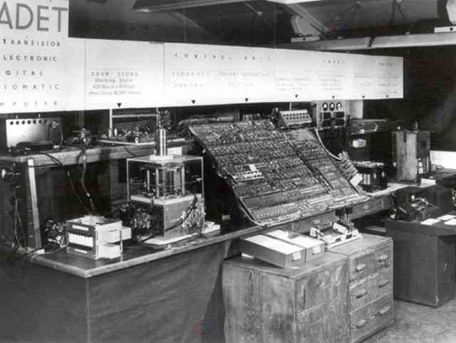

September 17, 2025 Introduction: A Digital Revolution Unfolding By John Paul L. Monroyo
Computers have been a part of our lives to the point that it is impossible to imagine our world today
without them. Back then, their creation was intended solely to serve as a computational device, but
through innovation and advancement, it has since evolved and become widespread.
With its capabilities, many consumers adopted it, reshaping their work procedures and
performance. The computer industry has not only enhanced our work productivity with its speed
and performance, but it has also impacted certain aspects of our daily lives.
It changes the way we learn, live, and connect with people from various countries.
As a result, computers have been adopted in various fields, such as business operations,
healthcare, education, entertainment, transportation, and even manufacturing. With countless
industries inclining towards technology, it is safe to say that computers have now become at the
heart of various industries.
The History and Upgrades of Computers
Computers today have a really big difference from early computers. Comparing them side by side
can show how much has changed over time.
First Generation of Computers (1940s)
The first generation of computers was developed in the 1940s. It consists of a massive block of
machines powered by vacuum tubes, built only for simple calculations and data processing.

Second Generation of Computers (1950s)
In the 1950s, the second generation of computers introduced transistors, making computers
smaller, faster, and more reliable.
Third Generation of Computers (1960s and 1970s)
After that, around the 1960s and 1970s, computers switched
from transistors to integrated circuits, which improved speed and efficiency even more.
Fourth to current Generation of Computers (1970s)
The biggest leap in performance happened when the fourth generation of computers at the
beginning of the late 1970s introduced microprocessors, which was the starting point of people
owning personal computers that they could keep in their homes and offices.
As years passed, computers kept getting improvements, which eventually led to the development of
laptops, smartphones, and other devices. Every upgrade not only improved performance but also
made computers more available to regular people.
The Rapid Growth of Computers in Industry
1. Computers in Business and Finance
Businesses now rely heavily on computers to stay competitive. With the computer industry, a lot of
manual transactions have shifted. From employee to client interaction to digital transactions, from
on-site banking to online banking, and from manual ledger to automated accounting systems.
Additionally, Stock trading that was once conducted through face-to-face human interaction is now
handled by algorithms running on powerful servers. Even small businesses use cloud-based
systems for sales, marketing, and customer engagement.
2. Computers in Healthcare
The healthcare industry has seen life-changing innovations thanks to computers.
Before Electronic Health Records (EHRs), healthcare staff had to manually write everything —
our name, medications, and medical progress. This manual process often caused
misunderstandings and handwriting errors, which sometimes resulted in medication mistakes.
As a solution, EHRs were created, making patient data more accessible and accurate.
AI-powered tools now assist doctors in diagnosing diseases with remarkable accuracy.
Later on, robotic-assisted surgeries, wearable fitness devices, and telemedicine breakthroughs
have made healthcare faster, safer, and more efficient.
3. Computers in Education
Computers have opened education to a global audience. Platforms like Khan Academy,
Udacity, Coursera, and Edmodo allow students to learn from anywhere in the world.
During the COVID-19 pandemic, computers and the internet became the lifeline of education,
enabling remote learning for millions. Virtual reality (VR) classrooms and interactive e-books
are reshaping how knowledge is delivered. With the emergence of Artificial Intelligence (AI)
as a tool in education, learning methods will only continue to improve, aiming for
greater engagement and efficiency.
4. Computers in Entertainment and Media
The computer industry has completely transformed entertainment and media.
Streaming platforms like Netflix, Spotify, and YouTube rely on massive data centers and
recommendation algorithms. Video games, once limited to arcades, now feature advanced
graphics and online multiplayer modes. Even traditional media such as journalism and film
production rely on digital editing software and publishing platforms.
5. Global Statistics on Computer Growth
According to Statista, over 5.3 billion people now use the internet.
Global IT spending
surpassed $5 trillion (approximately ₱284.85 trillion) in 2024, showing just how vital
computers are in almost every sector of the economy. With these statistics, the computer
industry’s rapid growth shows no sign of slowing down.
The Future Career of IT in Today’s World
As technology continues to evolve, the demand for IT-related jobs has only increased.
Careers in IT are no longer limited to software developers; they now include roles that are
essential for building, managing, and protecting the digital world.
Cybersecurity Specialists – Protect systems and prevent losses
from cyberattacks, which are projected to cost $10.5 trillion globally by 2025.
AI & Machine Learning Engineers – Develop algorithms that train
machines to learn, powering chatbots, self-driving cars, and automation tools.
Cloud Computing Specialists – Design and manage cloud infrastructure,
ensuring scalability, security, and performance for global collaboration.
Data Scientists and Analysts – Transform massive amounts of data into
valuable insights for business and innovation.
Software Developers & App Designers – Build applications,
entertainment platforms, and systems that we use daily.
Emerging Careers – Blockchain Developers (Deloitte, 2021),
IoT Specialists (IEEE, 2019), and IT Project Managers (PMI, 2022) are
increasingly in demand.
According to the U.S. Bureau of Labor Statistics, IT-related jobs will grow 15% faster
than the average for all occupations between 2021 and 2031 — making IT one of the most
future-proof industries.
Why IT Careers Matter Today
Choosing a career in IT is not just about financial stability — it’s about contributing to
global innovation. Every company, even small ones, needs IT experts to remain competitive.
Without them, businesses risk being left behind by technological trends.
According to AWS & Gallup (2023), workers with advanced digital skills earn
65% more than non-digital workers, adding nearly US$1 trillion to Asia-Pacific GDP.
Most importantly, IT careers give individuals the power to shape the future,
from AI that diagnoses diseases to apps that connect communities.
Conclusion: Be Part of the Digital Future
The rapid growth of computers has redefined industries and continues to shape our lives.
The future belongs to those who adapt, innovate, and use technology responsibly.
For students and aspiring professionals, pursuing an IT career is not just about securing
a job — it’s about becoming a part of the global movement that drives progress and shapes
the world. The question is: will you simply consume technology, or will you become one
of the creators who shape its future?
References
AWS & Gallup. (2023). Asia-Pacific digital skills study: Building future-ready workforces. Amazon Web Services.
Deloitte. (2021). Blockchain: Opportunities for the future economy. Deloitte Insights.
IEEE. (2019). The Internet of Things: Opportunities and challenges. Institute of Electrical and Electronics Engineers.
Project Management Institute. (2022). Pulse of the profession: PMO trends. Project Management Institute.
Statista. (2024). Number of internet users worldwide from 2005 to 2024. Statista Research Department.
U.S. Bureau of Labor Statistics. (2022). Occupational outlook handbook: Computer and information technology occupations. U.S. Department of Labor.


.jpeg)